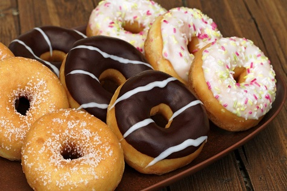

Home
About Us
Our Work
Our Products
Orders
Events
Types of bread
Banana loaf bread
Our banana loaf bread is moist, delicious, and absolutely packed with banana flavor
This banana loaf bread is super moist thanks to butter, egg, and brown sugar
store the banana loaf bread properly to keep it moist for several days
Wheat bread
High in fibre and is packed with energy and long lasting freshness
The wholewheat offers your family that extra wheaty taste
The extra fibre keeps their digestive system systems working
Types of scones
Lemonade scones
Lemonade Scones are the fastest and easiest scones you will ever make!
Incredibly fluffy, moist scones made from scratch.
Our secret ingredient is lemonade, which does not even taste like lemon.
Buttermilk scones
This recipe provides you with some great sweet and savoury variations.
The acidity in the buttermilk adds tenderness to baked goods.
The tang of the buttermilk brings good flavour.
Types of doughnuts
Frosted doughnuts

Our doughnuts are typically made using cake doughnuts.
Which makes it capable to withstand a heavier layer of frosting as well as topping.
Twist doughnuts
Our twisted doughnuts are made from yeasted dough
They are fried and rolled in sugar
The sugar on the outside adds sweetness and bit of crunch.
Types of Croissants
Chocolate Croissants
Layer upon layer of light, buttery flaky pastry filled with rich chocolate.
Our crossiant makes a great breakfast treat and perfect for Sunday brunch.
With every bite , you're treated to a burst of melted chocolate!
Raspberry rose lychee croissants
Filled with a burst of fruit flavored raspberry
Cut in half horizontally, and then spread with a thick layer of raspberry
Raspberry rose lychee croissants have a beautiful pink coloring to them